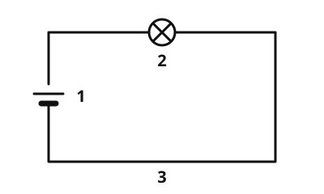
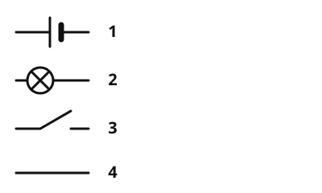
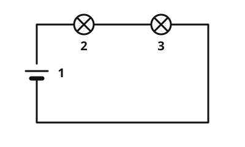
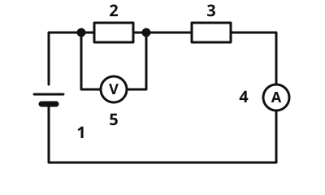

Media overview
All images, audio files and videos of this app with their source and licence.
Images

images/stromkreis.svg© CC0-1.0Used on: The simple circuit

images/schaltzeichen.svg© CC0-1.0Used on: Switches and circuit symbols

images/reihenschaltung.svg© CC0-1.0Used on: Series circuit

images/parallelschaltung.svg© CC0-1.0Used on: Parallel circuit

images/amperemeter.svg© CC0-1.0Used on: Current

images/voltmeter.svg© CC0-1.0Used on: Voltage

images/kennlinie.svg© CC0-1.0Used on: Ohm's law

images/reihe-messen.svg© CC0-1.0Used on: Series circuit with meters

images/parallel-messen.svg© CC0-1.0Used on: Parallel circuit with meters